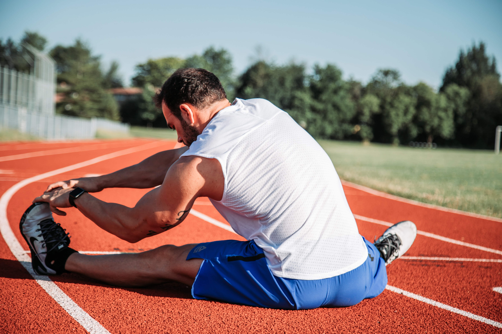
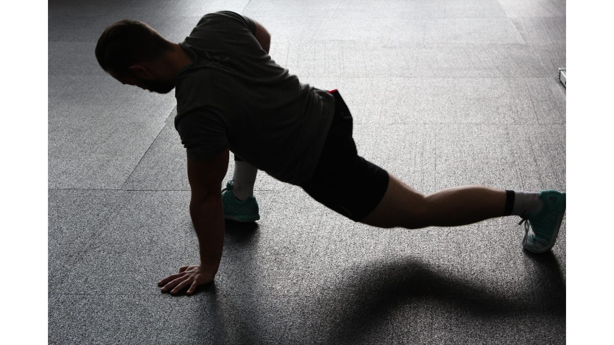
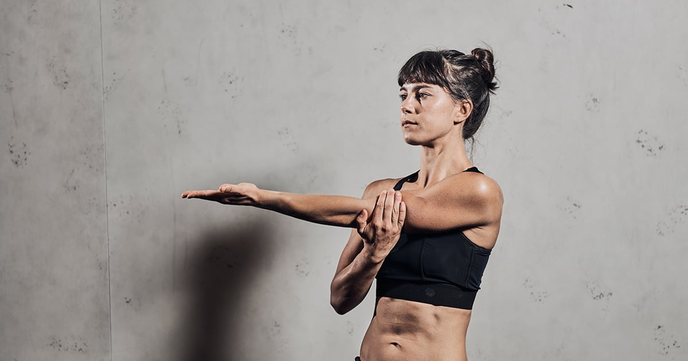
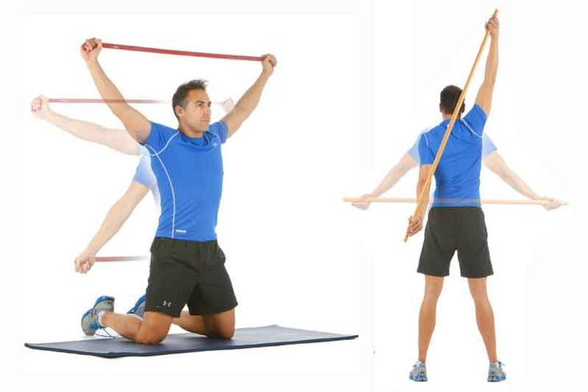

RODILLAS
LADO A LADO
movilidad articular que nos permite activar la articulacion de la rodilla y cadera

APERTURA DE PIERNAS
Abriendo las piernas lo mas que podamos estando sentados en el piso,tocaremos la punta de nuestros pies dejando salir todo el aire,expandiendo nuestra flexibilidad

CADERA
aqui activamos completamente la cadera y torso con aperturas controladas

BRAZOS
Agarraremos nuestro brazo con nuestra mano y lo cruzaremos a el otro hombro,generando una tension en el hombro y lolargo del brazo

HOMBROS
Con movimientos hacia los lados,abriendo y cerrando los brzos logramos activar la articulacion del hombro

ESPALDA BAJA
Acostados mirando hacia arriba,levantaremos una pierna y la apoyaremos perpendicularmente de nuestro torso,con una mano la agarraremos y la otra la usaremos para abrir nuestro pecho en direccios contraria a la pierna.Asi ayudamos a mejorar la capacidad de absorcion de daños en la espalda baja